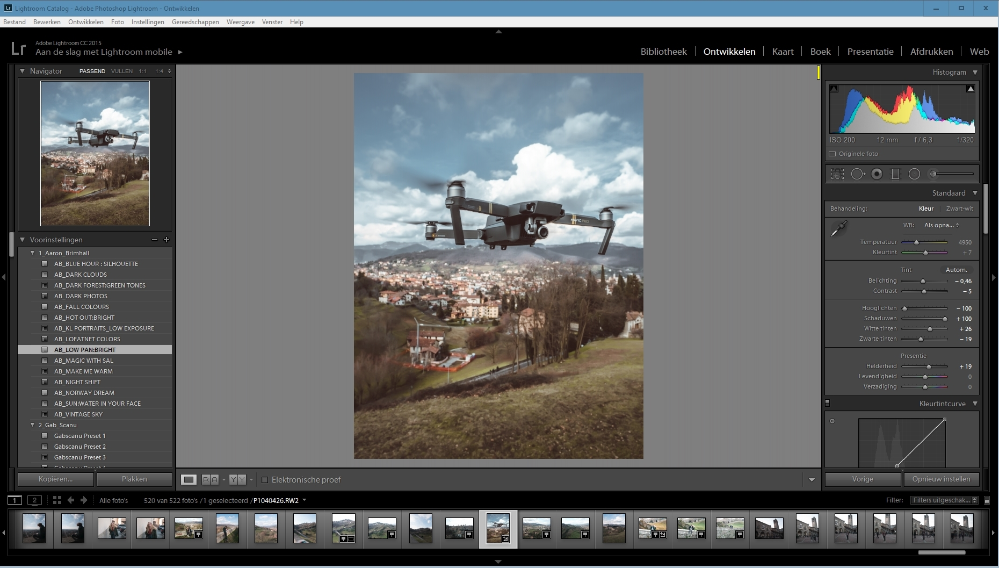
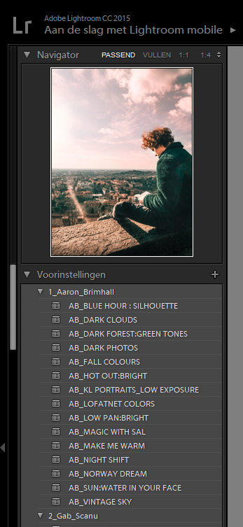

I edit my photos using Adobe Lightroom.
Its an easy to learn and simple program to bring your photos to life.
You can use presets by other people.
Here is an example of one of my photographies what you can achieve wtih Lightroom.


As you see you can bring the colors and exposure really to life.
First of all: I always shoot my pictures in RAW format. Why? Because the RAW image format carries a lot more data and is therefore much more customizable than JPEG. Of course sometimes I shoot JPEG for example with my Phone as well, but whenever it’s possible I try to shoot in RAW.
If you are using Lightroom to enhance or edit your images then you will be familiar with the Develop module. Here you can make an almost infinite level of adjustment to variables including exposure, contrast, colour and many others. It’s then possible to save these settings as a preset for later use. These saved settings are known as Presets.
If you open the Develop module in Lightroom you will see the Presets panel on the left side of the screen. You can see an example in the screenshot below.
Using the Presets in Lightroom is very easy. First select the image that you want to apply the preset to and switch to the Develop module (if not already open). Now pick the Preset that you want to apply by clicking on it.
As it can sometimes be difficult to remember what all the presets do, Adobe created a nice preview feature in Lightroom so that you can preview the effect of presets. Just hover your mouse over the preset in the Presets Panel and you will see the image above the presets list (the navigator panel) change. You can see an example below.
But you want to apply those presets on your JPEGs you need to know that there can be a slightly different effect. “Slightly different” means that your JPEG can be for example over-/under saturated or over-/ under exposed.
Here is a usefull Youtube tutorial by K1 Production.